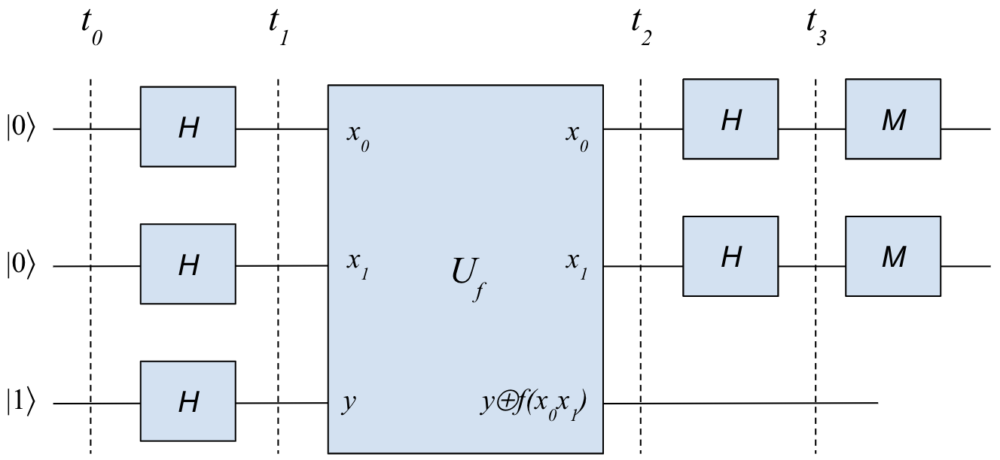

量子计算编程实战 – 双比特Deutsch问题
Ping Zhou, 2020-09-04
在上一篇 “一文看懂量子计算机的威力 – 从Deutsch问题说起” 中，我们看到了量子计算机只需一次查询就可以判断函数的特性。但是在那个例子中，我们讨论的是一个简单的单比特函数，如果把输入扩展到多比特，量子计算机是否仍然只需要一次查询呢？今天我们就结合谷歌的Cirq框架，看看量子计算的 指数级 加速。
双比特Deutsch问题
首先和上次一样，假设我们有个函数f，但这次函数f输入2个比特，输出1个比特。这个函数f对我们是黑盒，我们不知道这个函数内部是怎么运作的，只能通过喂给它不同的输入，观察输出。因为输入有2个比特，因此共有4种可能的输入00，01，10，11。
- 如果f无论什么输入，输出始终是0或者1，我们称它为“常量”函数，记作 \(f_0\) 或者 \(f_1\) ;
- 如果f的输出，0和1各占一半，我们称它为“平衡”函数。平衡函数有多少种可能呢？这个问题就相当于说，我们在下面表中的4个输出位置，需要填两个0和两个1，有几种填法？用简单的排列组合可以知道，一共有6种，也就是说一共有6个“平衡”函数。
| 输入 | 输出 |
| --- | --- |
| 00 | 0或者1 |
| 01 | 0或者1 |
| 10 | 0或者1 |
| 11 | 0或者1 |
- 当然，函数f也有可能既不是常量，也不是平衡的，例如上面的表里面，输出栏里可以填上三个0。
双比特Deutsch问题是问，假如我们已经知道函数f要么是常量，要么是平衡的，如何判断它是常量还是平衡的呢？
对于n比特输入，经典计算机需要至少查询一半可能的输入，也就是 \(2^{n-1}+1\) 次（在这个例子里n=2，所以需要查询3次）。显然随着输入比特数的增加，计算复杂性（需要查询的次数）是指数上升的。而 如果用量子计算机，无论输入n有多大，我们始终只需要对函数f进行一次查询！
怎么做到呢？套路和上次一样，引入一个辅助输入y，把函数f包装成量子比特版本Uf：
\begin{matrix} U_f |x_0\rangle |x_1\rangle |y\rangle \to |x_0\rangle |x_1\rangle |y \oplus f(x_0x_1)\rangle \end{matrix}然后在两边加上Hadamard门，电路也和上次的单比特电路差不多：

猜猜看在输出端测量，我们会得到啥？
这里先把结论放在这里 ：如果输出端得到的是全0，那么函数f一定是常量函数，反之它就是平衡函数。
原理解析
下面我们做一些推导，可以帮助您理解其中的原理。如果您不感兴趣，可以直接跳到下一篇的实战部分。其实推导并不难，不要被公式吓到 :-)
为便于分析，我在前面的电路图中标出了时间（t0, t1, t2, t3)。
在 时间t0 ，电路的状态是 \(|0\rangle|0\rangle|1\rangle\) 。
在 时间t1 ，前两个量子比特都处于 \(\frac{1}{\sqrt{2}}(|0\rangle+|1\rangle)\) 状态，第三个处于 \(\frac{1}{\sqrt{2}}(|0\rangle-|1\rangle)\) 状态。如果我们把前两个量子比特放一起考虑，相当于把他们的状态做一个卷积，也就是：
\begin{matrix} \frac{1}{\sqrt{2}}(|0\rangle+|1\rangle) \otimes \frac{1}{\sqrt{2}}(|0\rangle+|1\rangle) = \frac{1}{2}(|00\rangle + |01\rangle + |10\rangle + |11\rangle) \end{matrix}加上第三个辅助量子比特，整个电路的状态就是
\begin{matrix} \frac{1}{2}(|00\rangle + |01\rangle + |10\rangle + |11\rangle) \frac{1}{\sqrt{2}}(|0\rangle-|1\rangle) \end{matrix}在 时间t2 ，经过了Uf后，前两个量子比特不变，第三个量子比特变成了 \(\frac{1}{\sqrt{2}}(|f(x_0x_1)\rangle-|1 \oplus f(x_0x_1)\rangle)\) 。然后和上次一样的套路： \(f(x_0x_1)\) 如果是0，那么第三个量子比特就是 \(\frac{1}{\sqrt{2}}(|0\rangle-|1\rangle)\) ，反之就是 \(\frac{1}{\sqrt{2}}(|1\rangle-|0\rangle)\) 。所以第三个量子比特这时的状态可以写成 \(\frac{1}{\sqrt{2}}(-1)^{f(x_0x_1)}(|0\rangle-|1\rangle)\) 。这就是我们喜闻乐见的phase kickback套路，把函数f踢到相位上去了。整个状态这时候变成：
\begin{matrix} \frac{1}{2}(|00\rangle + |01\rangle + |10\rangle + |11\rangle) \frac{1}{\sqrt{2}}(-1)^{f(x_0x_1)}(|0\rangle-|1\rangle)$ \end{matrix}这里面的相位 \((-1)^{f(x_0x_1)}\) 是全局的，可以放到前面去，变成：
\begin{matrix} \frac{1}{2}(-1)^{f(x_0x_1)}(|00\rangle + |01\rangle + |10\rangle + |11\rangle) \frac{1}{\sqrt{2}}(|0\rangle-|1\rangle) \end{matrix}这时候，如果我们扔掉辅助量子比特，只看前两个量子比特，我们看到是：
\begin{matrix} \frac{1}{2}((-1)^{f(00)}|00\rangle + (-1)^{f(01)}|01\rangle + (-1)^{f(10)}|10\rangle + (-1)^{f(11)}|11\rangle) \end{matrix}这里是2比特的情况，如果是更多的n比特，写成更通用的就是
\begin{matrix} \frac{1}{\sqrt{2^n}}\sum_{x=0}^{2^n-1}(-1)^{f(x)}|x\rangle \end{matrix}接下来 时间t3 ，再次经过H门，前两个量子比特的状态如何变化呢？这里以2比特为例做一下直观的分析，在进入两个H门之前的状态，实际上是下面四种状态的叠加：
- \((-1)^{f(00)}|00\rangle\)
- \((-1)^{f(01)}|01\rangle\)
- \((-1)^{f(10)}|10\rangle\)
- \((-1)^{f(11)}|11\rangle\)
我们可以分别对这四个状态进行分析：
- \((-1)^{f(00)}|00\rangle\) ：经过H门变成 $(-1)f(00)
H|0⟩ ⊗ H|0⟩ → (-1)f(00) \frac{1}{\sqrt{2}}(|0⟩+|1⟩) ⊗ \frac{1}{\sqrt{2}}(|0⟩+|1⟩)$ ，进一步展开成 \(\frac{1}{2}(-1)^{f(00)} (|00\rangle+|10\rangle+|01\rangle+|11\rangle)\)
- \((-1)^{f(01)}|01\rangle\) ：同样的，经过H门展开成 $\frac{1}{2}(-1)f(00)
(|00⟩+|10⟩-|01⟩-|11⟩)$
- \((-1)^{f(10)}|10\rangle\) ：经过H门展开成 $\frac{1}{2}(-1)f(00)
(|00⟩-|10⟩ + |01⟩-|11⟩)$
- \((-1)^{f(11)}|11\rangle\) ：经过H门展开成 $\frac{1}{2}(-1)f(00)
(|00⟩-|10⟩-|01⟩+|11⟩)$
上面这四个状态叠加起来，再按照 \(|00\rangle\) ， \(|01\rangle\) ， \(|10\rangle\) ， \(|11\rangle\) 分组，变成这样：
\begin{matrix} \frac{1}{2} [(-1)^{f(00)} + (-1)^{f(01)} + (-1)^{f(10)} + (-1)^{f(11)}]|00\rangle + \\ \frac{1}{2} [(-1)^{f(00)} - (-1)^{f(01)} + (-1)^{f(10)} - (-1)^{f(11)}]|01\rangle + \\ \frac{1}{2} [(-1)^{f(00)} + (-1)^{f(01)} - (-1)^{f(10)} - (-1)^{f(11)}]|10\rangle + \\ \frac{1}{2} [(-1)^{f(00)} - (-1)^{f(01)} - (-1)^{f(10)} + (-1)^{f(11)}]|11\rangle \end{matrix}如果我们在这时测量这两个量子比特，会得到00，01，10，11四个结果之一。而上面四个方括号里的东西，就是这四个状态各自的强度，也就是测量得到这四个结果各自的概率。例如测量得到00的概率是 \(\frac{1}{2} [(-1)^{f(00)} + (-1)^{f(01)} + (-1)^{f(10)} + (-1)^{f(11)}]\) 。
到这里，是不是看出点什么名堂了？我们来看函数f的性质：
- 如果f是常量函数，那么 \((-1)^{f(00)}\) ， \((-1)^{f(01)}\) ， \((-1)^{f(10)}\) ， \((-1)^{f(11)}\) 这四个全是1或者全是-1，上面四个中括号里面，只有第一个会是非零（四个数相加得到4或者-4），其他三个中括号里都是两个正两个负，互相抵消为零。也就是说，如果f是常量，那么除了 \(|00\rangle\) 外，其他状态的强度都是零。我们在这时进行测量，得到的结果一定是00！
- 如果f是平衡函数，那么 \((-1)^{f(00)}\) ， \((-1)^{f(01)}\) ， \((-1)^{f(10)}\) ， \((-1)^{f(11)}\) 这四个中，两个是1，两个是-1。放到上面的四个方括号里，第一个方括号必然是零（四个数相加，其中两个1，两个-1），所以 \(|00\rangle\) 的强度是零，而后面三个方括号必有一个非零。所以我们在这时进行测量，得到的结果一定是01，10，11其中之一，而不可能是00！
所以结论是，我们在输出端测量前两个量子比特，如果结果是00，那么函数f是常量，如果不是，那么函数f是平衡的。更重要的是，虽然输入变成了2个比特，我们仍然只需要对函数f做一次查询，而且这个方法可以进一步扩展到n个比特，都只需要一次查询。可见，随着输入规模的扩大，经典计算机的计算复杂度上升，量子计算机的优势会越来越明显。
在下一篇“实战篇”里，我会结合谷歌的Cirq量子计算编程框架，演示双比特Deutsch问题的模拟实现。